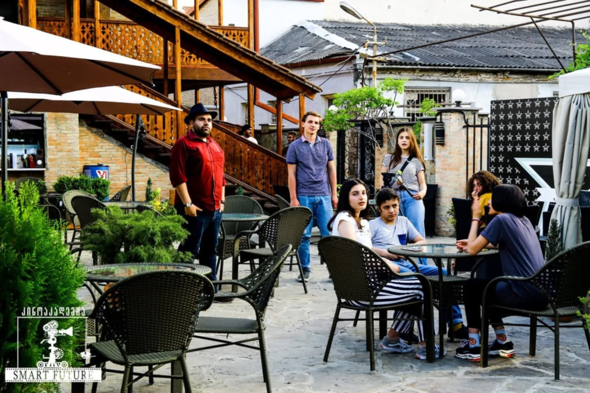
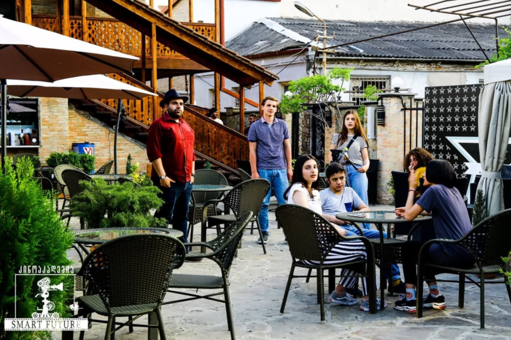
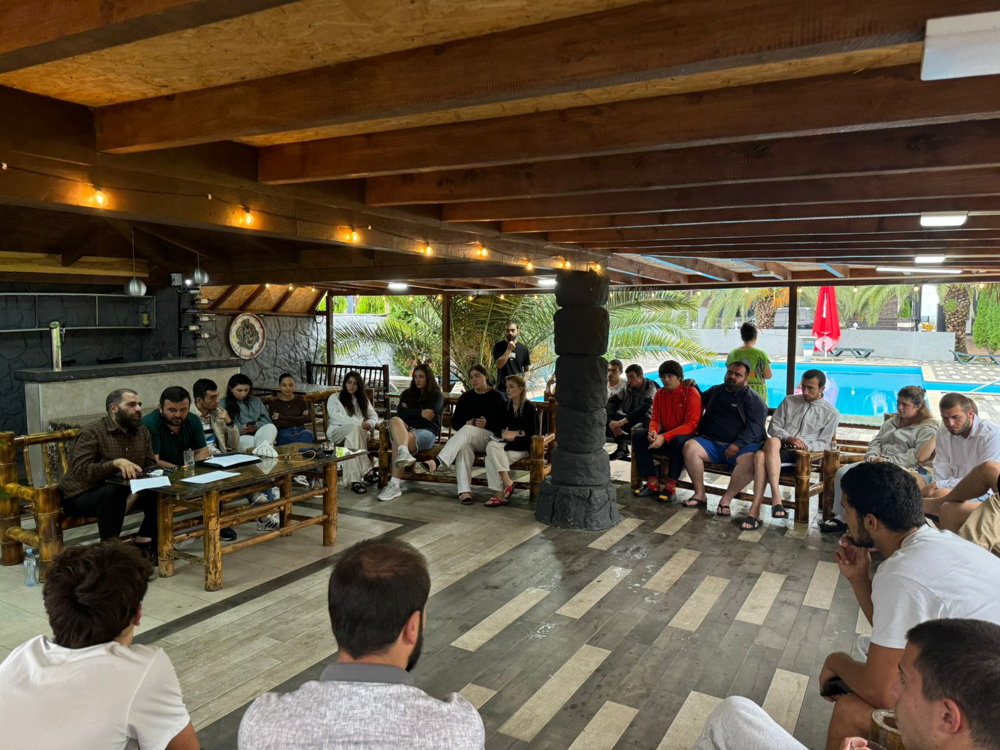
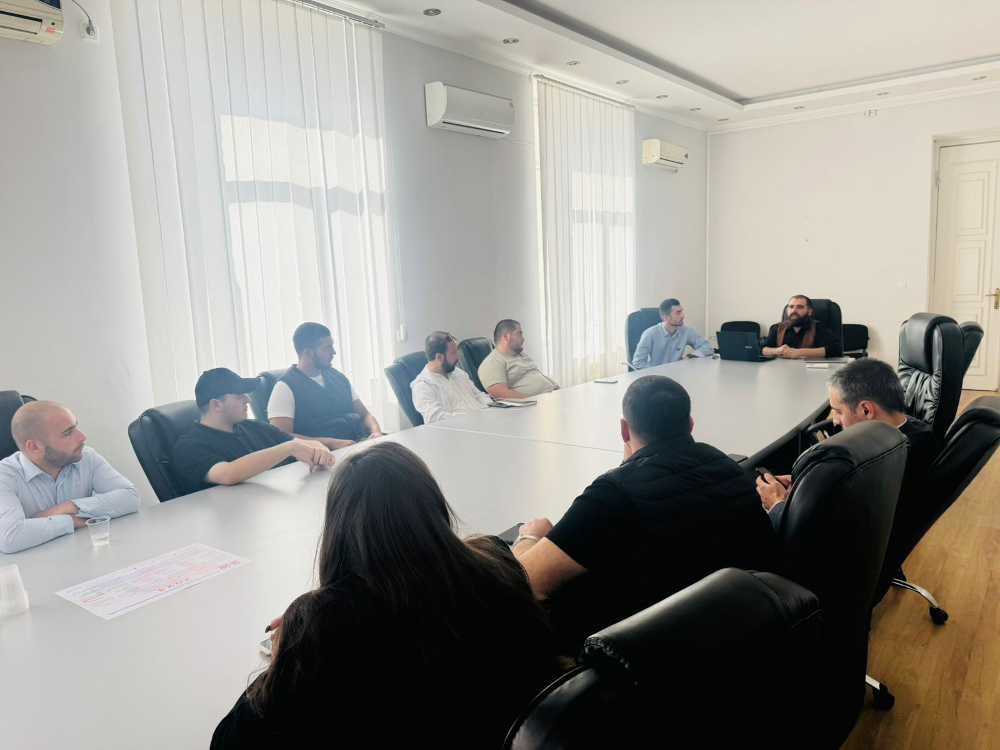
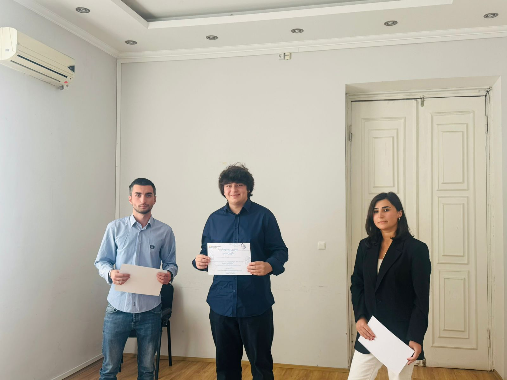
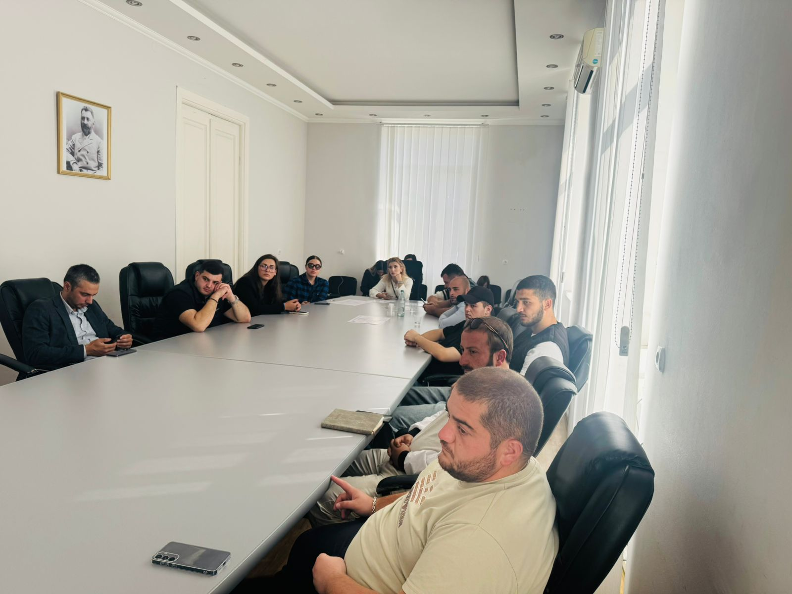
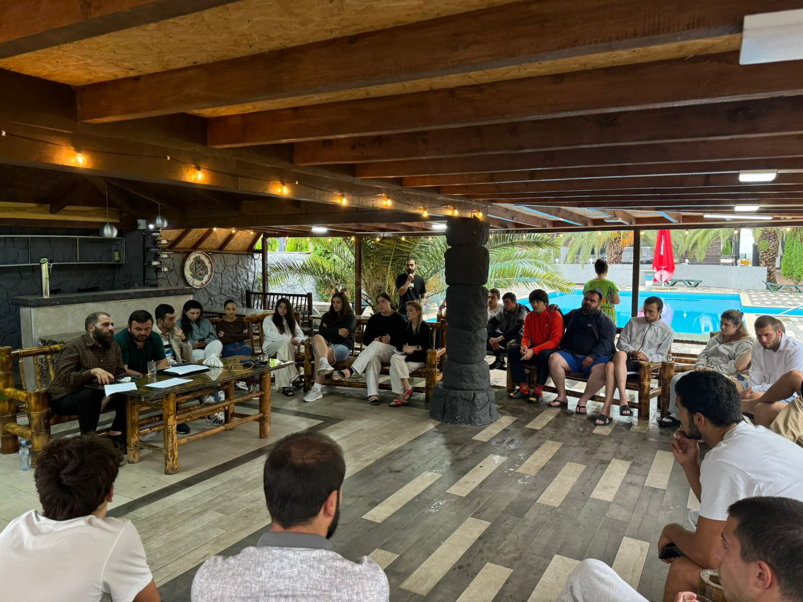
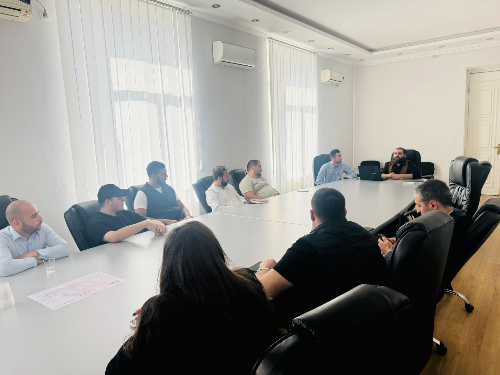
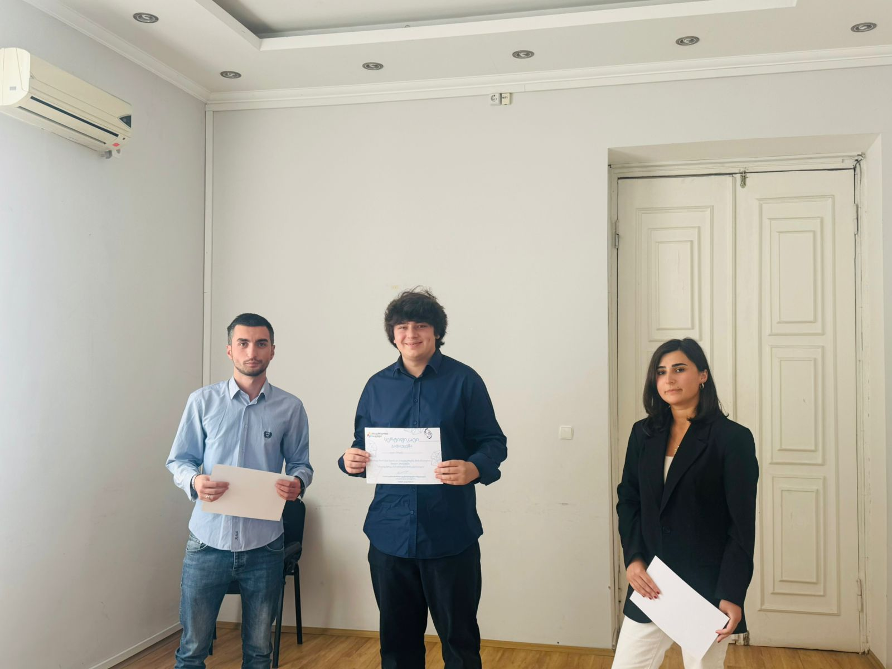
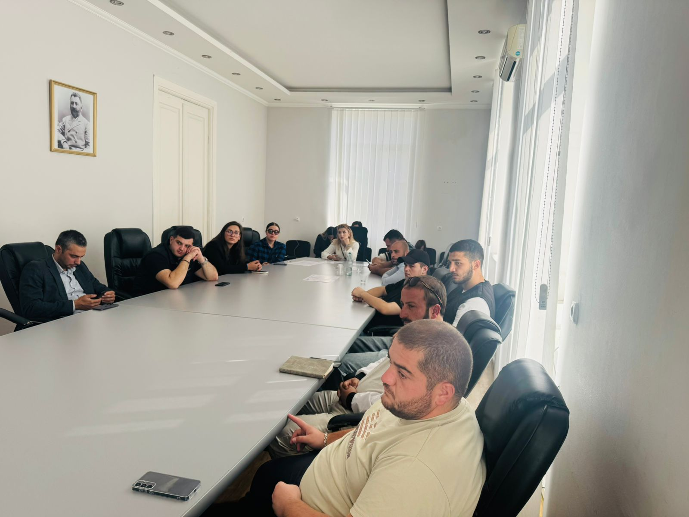

ააიპ „ჭკვიანი მომავალ(ი)-ს"ორგანიზებით გაკეთდა, სადაც მონაწილეობას იღებდა 500-მდე სკოლის მოსწავლე, ბავშვები არჩეულნი იყვნენ,როგორც გორიდან, ასეევე რაიონებსა და საზღვრისპირა სოფლებიდან.
 

აღნიშნული პროექტი ორგანიზებულია იუსტიციაასა და სამოქალაქო ინტეგრაციის საკითხებში აფხაზეთის ავტონომიური რესპუბლიკის მინისტრის აპარატის ინიციატივით და მიზნად ისახავს აფხაზეთიდან დევნილი და საოკუპაციო ხაზის გასწვრივ მცხოვრბი ახალგაზრდების შესაძლებლობების გაზრდას, დეზინფორმაციისა და პროპაგანდის მიმართ მათი მედეგობის გაძლიერებასა და ამ გზით ქართულ-აფხაზური ურთიერთობების გამყარებას.
ახალგაზრდების ბოლო ნაკადმა ბაკურიანი დღეს დატოვა. გორის მუნიციპალიტეტის მერის მოვალეობის შემსრულებელი სიმონ გულედანი ბაკურიანის ბანაკს გორის მუნიციპალიტეტის განათლების, კულტურის, სპორტისა და ახალგაზრდულ საქმეთა სამსახურის ხელმძღვანელთან რამაზ შიოშვილთან ერთად სტუმრობდა. მათ პროექტის მონაწილეებს სერტიფიკატები გადასცეს და ახალგაზრდების დასკვნით ღონისძიებას დაესწრნენ. პროექტი "ახალგაზრდა ლიდერები 2025" გორის მუნიციპალიტეტის მერიისა და ა(ა)იპ საერთაშორისო ტექნოლოგიური ინტელექტის თანამშრომლობით განხორციელდა. მიმდინარე წელს ბანაკმა15 - დან 29 წლამდე ასაკის 80 ახალგაზრდას ორ ნაკადად უმასპინძლა. ახალგაზრდები ესწრებოდნენ ტრენინგებს სასკოლო თვითმმართველობის განვითარების, პროექტის წერისა და პრეზენტაციის, სოციალური აქტივიზმის, ახალგაზრდული მუშაკის კომპეტენციების, ინოვაციური ტექნოლოგიების, სტარტაპებისა და ხელოვნური ინტელექტის შესახებ. გარდა შემეცნებითი აქტივობებისა, ისინი ჩართულები იყვნენ სხვადასხვა კულტურულ, სპორტულ და გასართობ ღონისძიებებშიც. პროექტის მიზანი იყო ლიდერული თვისებების განვითარება, პროექტების წერისა და მართვის შესწავლა, საგრანტო პროექტების მოძიება და მათი პრიორიტეტების განსაზღვრა.
ახალგაზრდებს ჩაუტარდათ ტრენინგ გადამზადების კურსი გრანტებისა და პროექტების მოძიების მიმართულებით და პროექტის წერასა და მარკეტინგის მიმართულებით. კონკურსის მონაწილეები 18 დან 29 წლამდე ახალგაზრდები იყვნენ. ორგანიზაციის დირექტორმა და პროექტის ხელმძღვანელმა ტრენინგ კუსის დასრულების შემდეგ მონაწილეებს სერტიფიკატები გადასცეს. შეხვედრას ესწრებოდნენ ახალგაზრდობის სააგენტო • Youth Agency -ს ხელმძღვანელის მოვალეობის შემსრულებელი ბატონი ვახტანგ ბააკაშვილი და მისი წარმომადგენლები თამარ ცუკოშვილი და ნინო ყარალაშვილი. პროექტის მიზანი რეგიონში არაფორმალური განათლების განვითარების ხელშეწყობა, დამატებითი ფონდების მოზიდვა და ახალგაზრდებში სამეწარმეო უნარჩვევების განვითარება იყო.
 







გორის მუნიციპალიტეტის მერის მოვალეობის შემსრულებელი სიმონ გულედანი, საკრებულოს თავმჯდომარე დავით რაზმაძე და ხელისუფლების სხვა წარმომადგენლები ბაკურიანის ახალგაზრდულ ბანაკს სტუმრობდნენ. ხელისუფლების წარმომადგენლებმა ახალგაზრდებს სერტიფიკატები გადასცეს და ბანაკის პირველი ნაკადის დასკვნით ღონისძიებას დაესწრნენ. პროექტი "ახალგაზრდა ლიდერები 2025" გორის მუნიციპალიტეტის მერიისა და ა(ა)იპ საერთაშორისო ტექნოლოგიური ინტელექტის თანამშრომლობით ხორციელდება. ახალგაზრდები ესწრებოდნენ ტრენინგებს სასკოლო თვითმმართველობის განვითარების, პროექტის წერისა და პრეზენტაციის, სოციალური აქტივიზმის, ახალგაზრდული მუშაკის კომპეტენციების, ინოვაციური ტექნოლოგიების, სტარტაპებისა და ხელოვნური ინტელექტის შესახებ. გარდა შემეცნებითი აქტივობებისა, ისინი ჩართულები იყვნენ სხვადასხვა კულტურულ, სპორტულ და გასართობ ღონისძიებებშიც. პროექტის მიზანია ლიდერული თვისებების განვითარება, პროექტების წერისა და მართვის შესწავლა, საგრანტო პროექტების მოძიება და მათი პრიორიტეტების განსაზღვრა. მიმდინარე წელს ბანაკი15 - დან 29 წლამდე ასაკის 80 ახალგაზრდას ორ ნაკადად მასპინძლობს.

ს/კ 418483359
ა(ა)იპ ქართული გენია ჰოლდინგი ახორციელებს კულტურულ, საგანმანათლებლო, შემეცნეით პროექტებს, რაც მნიშვნელოვანია რეგიონის განვითრებისთვის, ორგსნიზაცია მხარს უჭერს ქართული, ეროვნული ინიციატივების ხელშეწყობასა და გგანვითარებას რაც უფრო ცნობადს გახდის საქართველოს ტრადიციულ ღირებულებებს. ა(ა)იპ ქართული გენია ჰოლდინგის დაარსებამდე იყო ახალგაზრდების საინიციატივო ჯგუფი რომელიც მუშაობდა შიდა ქართლის მასშტაბით 2021 წლიდან შემეცნებით გასართობ პორექტებზე როგორც კულტურული ასევე სპორტული მიმართულებებით ასევე ჯგუფი ორგანიზებულად იყო ჩართული საერთაშორისო ფესტივალებში როგორიცა ,,ხელოვნება საზღვრების’’ გარეშე; ოლიპიური გარბენი- სადაც ჩართლი იყო ჯამში 340 მონაწილე. ასევე ორგანიზაციამ განახორციელა პროექტი სპორტი საქართველოსთვის რომელშიც ჩართული იყო 20 მდე ახალგაზრდა და პროექტს ყავდა ათასობით მაყურებელი. ასევე 2024 წელს ჩატარდა კიბერ სპორტის ჩემპიონატი სადაც ჩართული იყო 200 ზე მეტი ახალგაზრდა 2024 წელს გადამზადა 100 ზე მეტი ახალგაზრდა კიბერ სპორტის და ინოვაციური ტექნოგიების მიმართულებით. ამჟამად გორის მუნიციპალიტეტი დაფინანსებით ვანხორციელებთ პროექტს “ ციპრული ინტელექტი 2025” სადაც ჩართულია გორის მუნიციპალიტეტში მცხოვრები 200მდე ახალგაზრდა. ააიპ საერთაშორისო ტექნოლოგიური ინტელექტი ს/კ 418483420 2025 წელს განახორციელა პროექტი “ახალგაზრდა ლიდერები 2025’’ პროექტი მოიცავს 2025 წლის ზამთრის ახალგაზრდული ბანაკის ჩატარებას რომელიც ითავსებს ამავდროულად არაფორმალური განათლებას, ახალგაზრდების დასაქმებას, ლიდერული თვისებების განვითარებას, პროექტების წერის და მართვის შესწავლას, კარიერულ დაგეგმარებას, საგრანტო პროექტების მოძიებას და მათი პრირორიტეტების განსაზღვრას. პროექტის მიზანი გორის მუნიციპალიტეტში მცხოვრები ახალგაზრდებისთვის ზამთრის ბანაკის მოწყობა იყო , რომელშიც ინტეგრირებული იქნება არაფორმალური განათლება შემდეგი მიმართულებებით. 1 სასკოლო თვითმართველობის განვითარება 2 სოციალური აქტივიზმი 3 ახალგაზრდული მუშაკის კომპეტეციები 4 პროექტის წერა და პრეზენტაცია 5 ინოვაციური ტექნოლოგიები და სატარტაპები ა(ა)იპ სტუდია ოქონა ს/კ 417901952 2023 წლიდან ანხორციელებს. პროექტს “ახალგაზრდული მედიათეკა ოქონა” პროექტის ფარგლებში შიდაქართლში და ეგრეთ წოდებულ საზღვრისპირა სოფლებში მცხოვრები 15-29 წლამდე ახალგაზრდები გადამზადდნენ გადაღება მონტაჟის ჟურნალისტიკის და დეზინფორმაცის მიმართულებით შემდგომ მოხდა მათი დასაქმება და ინტეგრაცია სხვადასხვა ტელევიზიებსა და ორგანიზაციებში. პროექტის მიზანი ასევე ეკლესის წინაღმდეგ დაწყებული დეზინფორმაცის შემცირება და წყაროების გამოვლენაა, ასევე სიუჟეტების გაშუქება შექმნა ჟურნალისტიკის მიმართულებით აქტიური ჩართვა ინტერნეტ ტელევიზიაში. ა(ა)იპ საერთაშორისო ინოვაციური ინდუსტრია აქტიურად არის ჩართული აიპთა გაერთიანებული ასოციაციის საქმიანობებში, მან 2024 წელს განახორცოელა პროექტი “ლიდერობა და პიროვნული უნარჩვევების განვითარება ძლიერი მომავლისთვის” სადაც ახალგაზრდებს ჩაუტარდათ ტრენინგები და ვორქშოფები ლიდერული და პიროვნული უნარ-ჩვევების განვითარებისთვის. ა(ა)იპ პანონიმა ჩართულია ახალგაზრდული პროექტების მოძიებასა და განხორციელების, ახალგაზრდების გადამზადების საკითხებში. ასევე ორგანიზაცია ორიენტირებულია და მიზნად ისახავს ახალგაზრდული პრობლემების აღმოჩენასა და აღმოფხვრას. ა(ა) იპ პანონიმამა ხელი შეუწყო გორის მუნიცოპალიტეტში ახალგაზრდების გადამზადებას ინოვაციური ტექნოლოგიების მიმართულებით. პროექტი - მომავლის ხიდი ეომელშიც ჩართული იყო 60 მდე ახალგაზრდა მოიპოვა გორის მუნიციპალიტეტის მერიის დაფინანსება,ახალგაზრდული ინოვაციური მედიათეკის შესაქმნელად და მის განსავითარებლად, რეგისტრაციამდე საინიციატივო ჯგუფის სახელით ჩაატარა ახალგაზრდების ცნობიერების ამაღლების მიზნით საერთო კონფერენცია სადაც ჩართული იყო 100 მდე ახალგაზრდა. ასევე გადამზადდა ახალგაზრდები პროექტის წერის და პრეზენტაციების შექმნის მიმართულებით ახლაგაზრდულ საჭიროებებზე სადაც ჩართული იყო 50 ახალგაზრდა. მოხალისეობრივად მოვახდინეთ მეორადი ნაჭრების გადამუშაება შემდგომი რეალიზებისთვის რაც ატარებდა გარემოს დაცვით ხასიათს. ასევე პარტნიორი ორგანიზაციის მიერ ჩატარებულ ბანაკში სადაც იყო 80 ახალგაზრდა შევასწავლეთ ხელოვნური ინტელექტის გამოყენება მარკეტინგის და გაყიდვების მიმართულებებით.